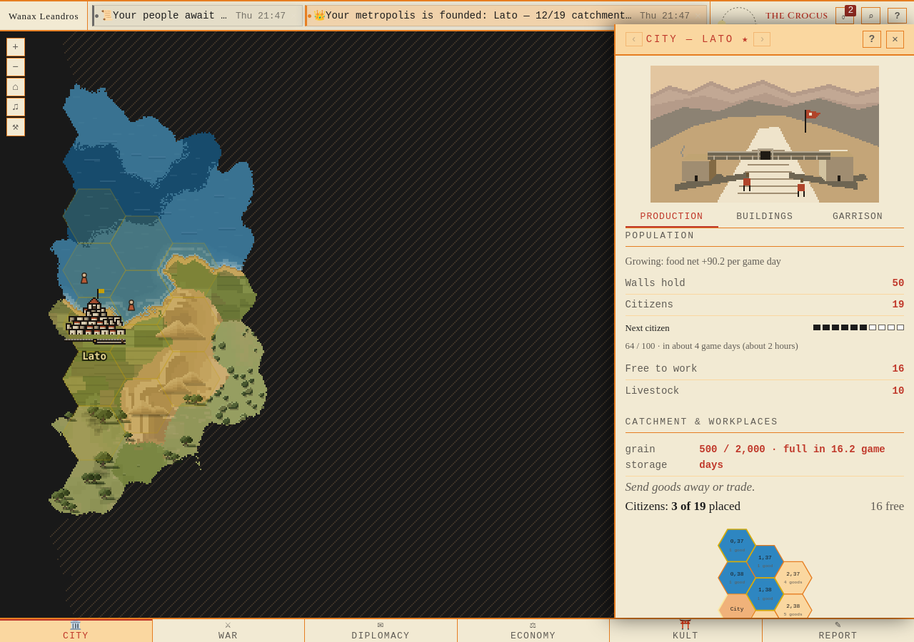
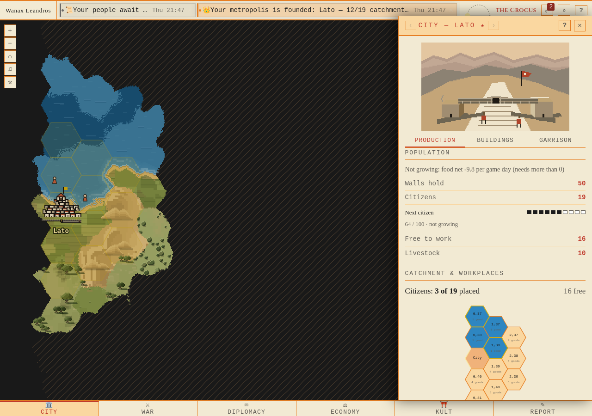
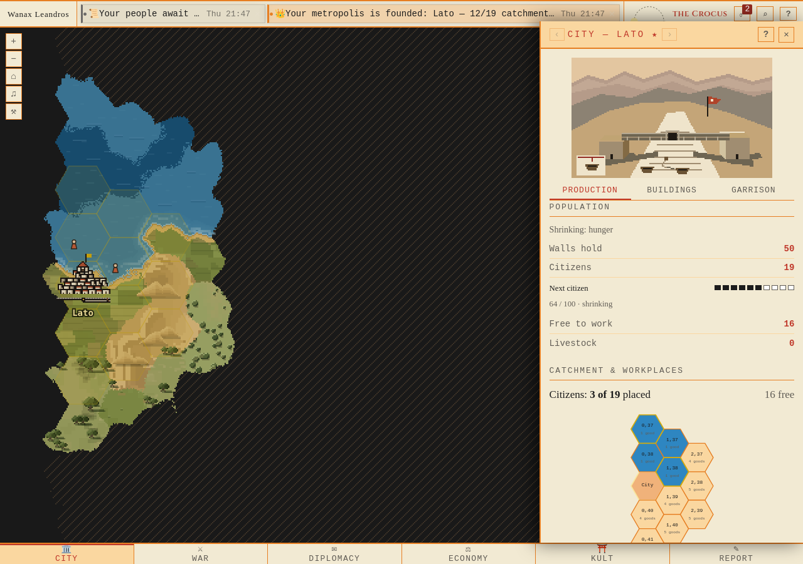
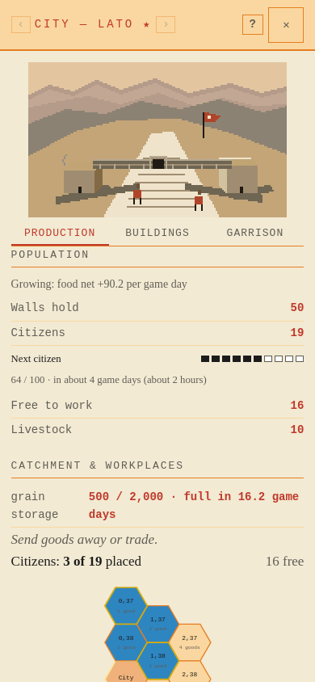
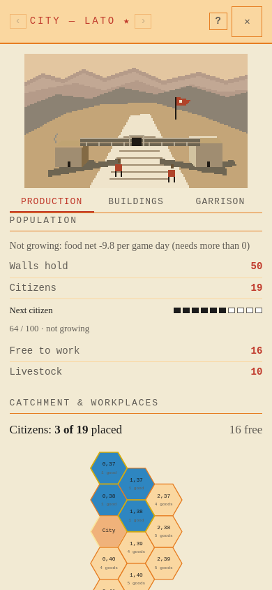
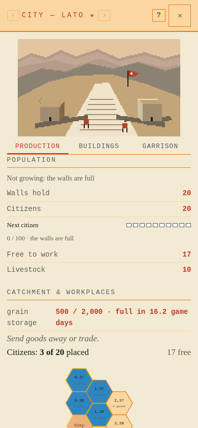
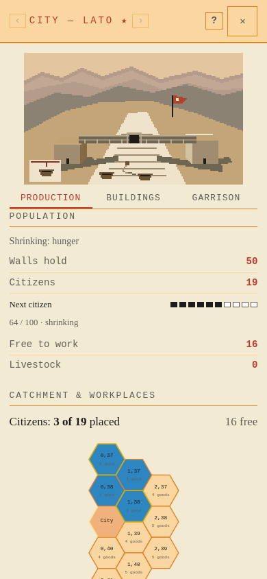

Next citizen
Actual City drawer in Firefox, native 1280×900 and 390×844. Ten whole progress steps. Current growth, stopped growth, full walls and hunger.
API/build provenance and assertions · Method
G1280 — Growing: 64 / 100 · about 4 game days (about 2 hours)
Actual API · Keryx city · Keryx status
H1280 — Holding: 64 / 100 · not growing
Actual API · Keryx city · Keryx status
C1280 — Capped: the walls are fullActual API · Keryx city · Keryx status
S1280 — Hunger: 64 / 100 · shrinking
Actual API · Keryx city · Keryx status
G390 — Growing: 64 / 100 · about 4 game days (about 2 hours)
Actual API · Keryx city · Keryx status
H390 — Holding: 64 / 100 · not growing
Actual API · Keryx city · Keryx status
C390 — Capped: the walls are full
Actual API · Keryx city · Keryx status
S390 — Hunger: 64 / 100 · shrinking
Actual API · Keryx city · Keryx status